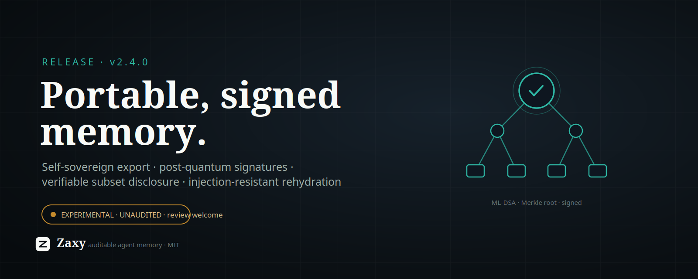

X Article Draft: Zaxy 2.4.0

Zaxy 2.4.0 ships the first piece of portable, signed agent memory — and the honest headline is that it is experimental, unaudited, and we are asking for review before anyone trusts it.
The short version: agent memory is locked inside vendor runtimes, and the moment you want to move it — between models, between agents, across a dispute — you need a way to prove what the memory is and who vouches for it, while revealing only the parts you choose. 2.4 adds that, built to the shape the W3C "AI Agent Memory Interoperability" Community Group (proposed weeks ago) and the Portable Agent Memory paper are converging on. It is opt-in (pip install zaxy-memory[export]), it warns loudly on import, and it makes no security claims it has not earned.
What shipped
zaxy.portable — a self-sovereign, verifiable memory-export layer on top of Eventloom's existing hash-chained integrity:
- Signed export bundles. Post-quantum ML-DSA-65 (NIST FIPS-204) signatures, with Ed25519 as a classical fallback — using vetted
pyca/cryptographyprimitives, never homegrown ones. Self-sovereign: you hold the key, the public key is the identity, no certificate authority. - Verifiable partial disclosure. A domain-separated Merkle tree lets you hand someone a subset of your memory plus an inclusion proof, and they can verify it belongs to the signed set without seeing the rest.
- Injection-resistant rehydration. Recalled content (tool output, transcripts) is treated as data, not instructions — guarded fencing + flagging — so resurfaced memory can't hijack the next model. Defense-in-depth, not a guarantee.
- Encryption envelope + cryptographic erasure. Per-cell AES-256-GCM keys, and GDPR-Article-17 erasure by destroying the key (the immutable ciphertext stays, permanently undecryptable) — with the hard invariant that key material must never enter the append-only log.
- Capability-scoped sharing and a pluggable public anchor (offline stub today; an OpenTimestamps hook for operator-independent verification).
This sits on the 2.3 line that made memory stick: per-turn memory injection (2.3.2, extended to Codex in 2.3.3) that closed the recall-persistence gap, and opt-in tool-I/O offload provenance (2.3.4).
Why it matters
Memory you can't move is a lock-in. Memory you can move but can't verify is a liability. The interesting problem isn't storage — it's a transfer format that is authentic (signed), minimally disclosed (prove a slice, not the whole history), forgettable (cryptographic erasure in an append-only world), and safe to rehydrate into a different model. That's an open frontier — a W3C group and fresh research are forming around it right now — and Zaxy already had the right substrate for it: an immutable, hash-chained event log where provenance is the product, not an afterthought.
The research behind it
This release is the end of an honest chain of experiments, not a leap of faith:
- We tested whether a dense symbolic encoding of memory would help models obey it. It didn't: an invented glyph notation failed comprehension on both Claude and GPT-4.1, and bought ~0% token savings over plain prose. The lesson — reuse a notation the model already knows; don't invent one — shaped everything after.
- We found the real lever was injection, not format: putting declarative state in front of the model lifted adherence from ~0.25 to ~1.0, even buried in a long context. That became the 2.3.2 recall fix.
- Hardening tool-I/O provenance (2.3.4) surfaced that our own capture truncated tool output — a gap in the audit trail. Closing it is what pointed at a proper signed-export design.
- For 2.4 we built to the emerging standard's choices — PQ signatures, Merkle provenance, crypto-erasure — rather than a bespoke format, so it can interoperate instead of fork.
The honest part — and the ask
We are a small project. We cannot commission a formal cryptographic audit, and we will not pretend a clean self-review is one. What we have done is the proportionate thing: vetted primitives only, an adversarial self-review of the protocol composition (which already caught and fixed three real issues), opt-in packaging, a loud import warning, and a written threat model. The self-review is a layer, not a substitute for independent human eyes.
So this is a genuine call for review. If you do cryptography or agent-memory work, please poke holes:
- The composition questions are on crypto.stackexchange — does binding the Merkle root + all metadata under one signature prevent swap attacks; are the (non-position-bound) subset proofs forgeable; what breaks crypto-erasure beyond "ensure no other key copy survives."
- Design, threat model, and conformance mapping:
docs/experimental/portable-export-security.mdand thezaxy.portablesource (pinned to v2.4.0). - If you're in the W3C interop CG: tell us where we diverge from where the spec is heading.
Try it: pip install "zaxy-memory[export]", then zaxy export-keygen, zaxy export, zaxy verify-export. The import warning is intentional — keep it in mind.
Until real review comes back, it stays experimental and unadvertised as anything more. That's the deal, and we'd rather say it out loud than ship a quiet "trust me." Findings welcome — break it.